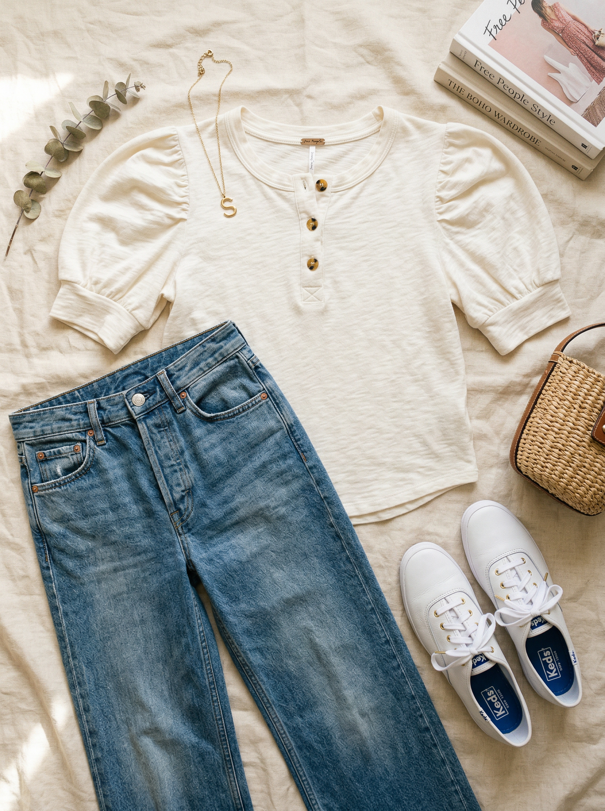
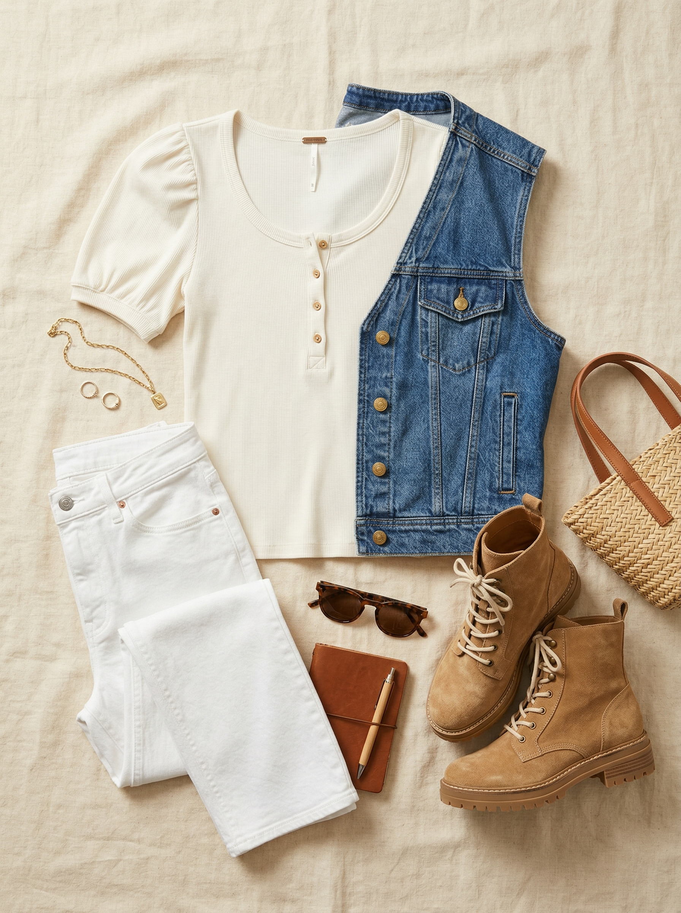
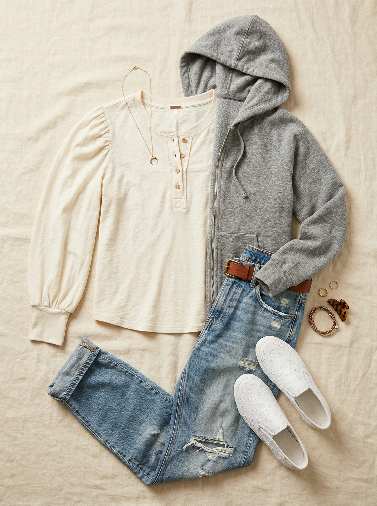

Free People (via Nordstrom)
Issa Henley Tee
$58
Not just another basic tee — the puff sleeve and henley button placket elevate this to something you'd actually think about putting on. Free People's quality is genuinely excellent, and the Clean Ivory is a warm white that pairs with everything. Feminine, boho-casual, and totally effortless.
Shop NowWhy This Pick
You have zero Free People in your wardrobe — and this is exactly where to start. The puff sleeve henley has so much more personality than a basic white tee, but it's just as easy to wear. Clean Ivory pairs with every bottom you own, from dark jeans to white jeans to the new linen pant. The boho-casual vibe is a nice break from your more structured pieces.
3 Ways to Wear It
Styled with pieces already in your closet

Look 1 — Boho Brunch Classic
Issa Henley Tee + Medium wash wide-leg jeans (#101) + White leather Keds sneakers (#510). The puff sleeve against the wide-leg denim is a beautiful silhouette — both pieces have volume but in different directions. A look that reads "I tried just enough" without actually trying.

Look 2 — White Summer Edit
Issa Henley Tee + White straight-leg jeans (#110) + Denim vest (#204) + Tan suede combat boots (#505). All-white with a denim vest layer is a cool, effortless summer look. The ivory tee with white jeans is a tonal play that reads sophisticated, not matchy. Combat boots add just enough edge.

Look 3 — Lazy Weekend Layers
Issa Henley Tee + Distressed boyfriend jeans (#111) + Gray full-zip hoodie (#66, open) + White eyelet slip-on sneakers (#508). Open gray hoodie over the boho tee is a relaxed layer that adds warmth without hiding the puff sleeve detail. Boyfriend jeans keep it easy. This is the Sunday-watching-soccer look.